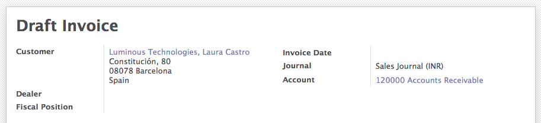
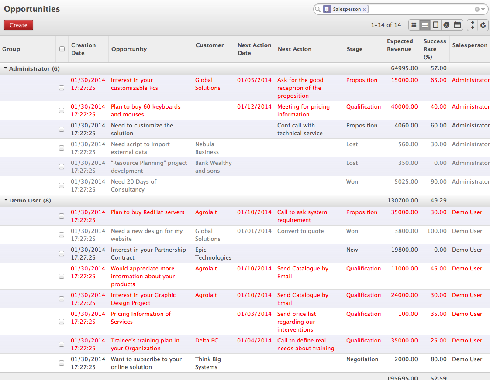
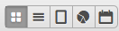
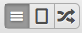
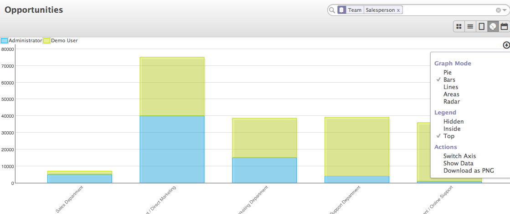
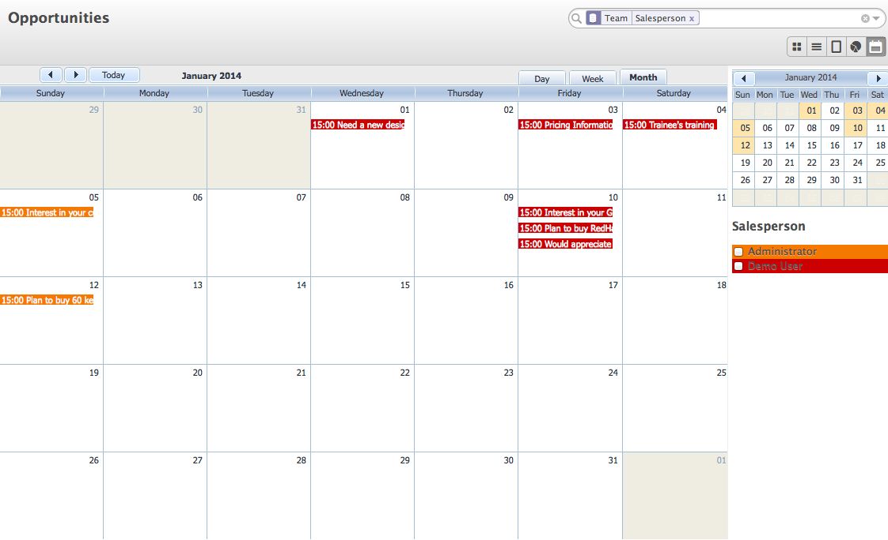
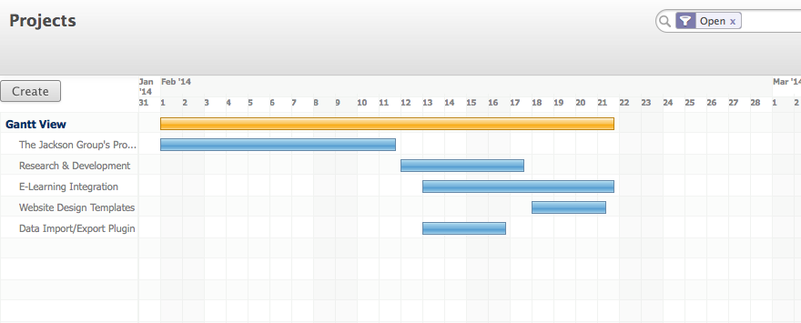
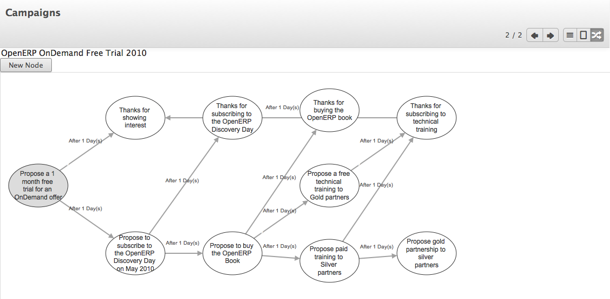

Working with different views¶
Business application with simplicity in use was dream for all the the big players of business applications in market, OpenERP made this dream comes true with very usable applications. Only due to the lots of research in the area of Usability that transform whole application in to really usable version by version.
OpenERP’s views are designed in such way that any user can adapt it easily in business. Forms are looks like a paper-sheet, List views are flexible to configure and groups and short on any visible columns.. Some of the object you may get Chart and Calendar Views too. Some views are special like Gantt View for Project Management, Manufacturing Planning and Diagram View Workflow Design which are specific applications. The new view introduced since OpenERP version 6.1 was Kanban which is a new methodology to define the pipes, stages or part of business process.
Standard Views¶
- Kanban View
- Form View
- List View
- Tree View
- Calendar View
- Gantt View
- Diagram View
- Search View
Lets see how you can make your life simple by efficiently working with the different view in OpenERP.
Kanban View¶
Since the OpenERP version 6.1 this view is introduce and applied to many objects to simplify the business process. A kanban view is also know as kanban board, It is one of the tools which can be used to implement the kanban method for a project. Kanban boards are perceived as a variation on traditional kanban cards. Instead of the signal cards that represent demand or capacity, the board utilizes magnets, plastic chips, colored washers or sticky notes to represent work items. Each of these objects represents an item in a business process and it moves around the board.

Kanban View of Opportunity
Depending on the objects you may get an options on clicking on the right-top corner on each activity. Some of the options like Edit, Delete, Color Grid to change colors are available for all the objects while some of the options are specific to objects. It is fully configurable depending on the objects, You can change the columns to decide and apply your business process and Kanban Board will be designed according. Like the Kanban Card you can move any item to any place on Kanban Board.
Form View¶
OpenERP have introduce the new kind of form view since the version 7.0 which give the feel like user are working with the paper-sheet. While working with the invoice it give you feeling like are preparing the invoice on paper.

Form View - Edit Mode
There is nothing much difference between Invoice in Edit mode and Invoice in Printed format. Since the version 7.0 form is having two different modes edit and readonly so depending on the mode form may display different on your screen. Look at the form view in readonly view it display customers full address as below.
Form View - Read Mode
List View¶
One of the simplest very important mode to display data on screen. Required some research before developing list view for any data model to make it very helpful to the end users, like what should be data display in columns and how they arranged in list. OpenERP have developed List view in such way that it provides all the basic operations what end users need. List view in OpenERP is not only a view to display data in table format, but it also provides data analysis tool too but filter, enabling or disabling some of the key columns and grouping data on screen. One can easily to data analysis on screen with OpenERP list view.
List View with Grouping
Switch between Views¶
Depending on the document presentation possibilities, users are allowed to switch between those view just by clicking on them. It just change the presentation with the same data, As the rendering of views developed in such way, so it switch view very quickly like a rich desktop based application.
If you are on Opportunity you may find the above possible view to switch between.
If you are on Workflow you may find above possible view to switch between.
So, It decided at the time of development that what kind of views are support for document and developed accordingly.
Graph View¶
Not all but some of the documents can be display on Graph which have some numbers to plot on axis. Graph view is improving version to version in OpenERP. In version 7.0 is it possible to display many different types of graphs along with the data table which can be exported easily in image or csv format.
Graph View
Calendar View¶
Like a graph view, you can not display all the data on calendar if they does not associate with the date information. So only document display on the Calendar which have the date information, like Opportunity, Invoice, Sale Order, Leave Request, Etc.
Calendar View
Gantt & Diagram View¶
Gantt view used for the specific types of application such as scheduling of project and task, manufacturing orders likely Diagram view represents activity and transition between those activities, one of the good example of diagram view is to design a marketing campaign on screen where activity and transition to be defined.
Gantt view to schedule the task
In order to create new node you can click on “New Node” or to edit select node and double click, It will open the activity configuration depending on your view configuration. To join two node with activity, click on node drag from black dot and drop on to other node will create an arrow (transition) between them and configuration for the same.
Diagram view used to Define a Marketing Campaign
Note
Along with the standard views, OpenERP have some special views as well like All Dashboard, OpenERP Inbox, and QWeb specifically designed for Web and Reports for OpenERP Version 8.0.